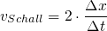

Experiment 1: Bestimmung der Schallgeschwindigkeit mit Hilfe von Smartphones
1 Fragestellung
Zahlreiche Smartphone-Apps ermöglichen das Auslesen und Abspeichern unterschiedlicher Daten von Smartphone-Sensoren. Die Apps "Physics Toolbox Sensor Suite" von Vieyra Software oder "phyphox physical phone experiments" der RWTH Aachen ermöglichen z.B. das Abspeichern von Schalldruckpegel-Zeitverläufen. Mif Hilfe dieser Verläufe könnte evtl. die Schallgeschwindigkeit (Tempo  ) gemessen werden. Dazu soll ein kleines Experiment durchgeführt werden, um zu überprüfen, ob die Schallgeschwindigkeit von ca. 340 m/s in Luft bei ca. 20° bestimmt werden kann.
) gemessen werden. Dazu soll ein kleines Experiment durchgeführt werden, um zu überprüfen, ob die Schallgeschwindigkeit von ca. 340 m/s in Luft bei ca. 20° bestimmt werden kann.
2 Material und Versuchsablauf
- mind. 2 Smartphones als Messgeräte
- 2 Pfeifen als Schallquellen
- mind. 50-Meter-Bandmaß
- Computer zum Auswerten der Messsignale (z.B. KST Plot Software https://kst-plot.kde.org/)
3 Messdaten
4 Auswertung und Ergebnisse


5 Disskussion
- Fehlerabschätzung
- Unter welchen Bedingungen gilt diese Betrachtung, Einschränkungen etc.